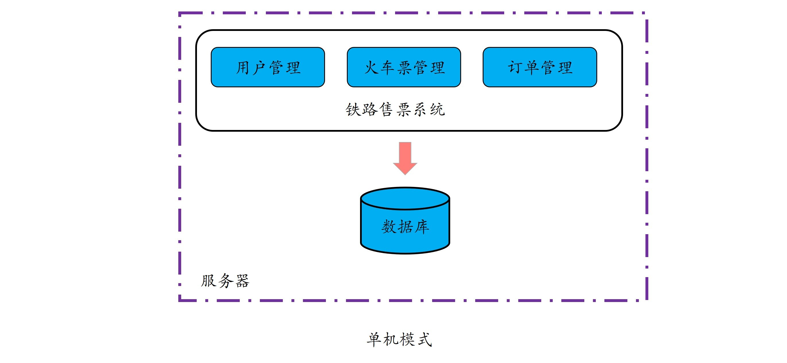
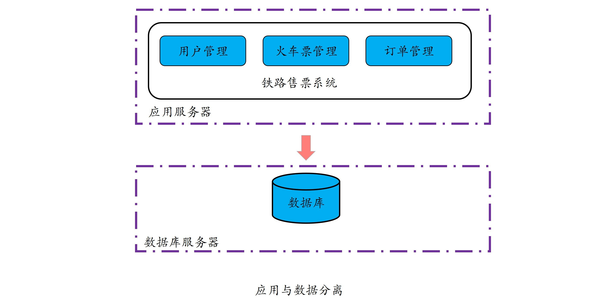
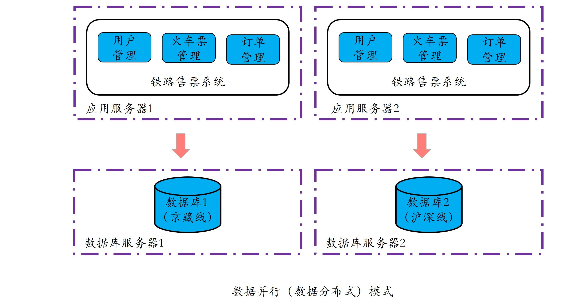
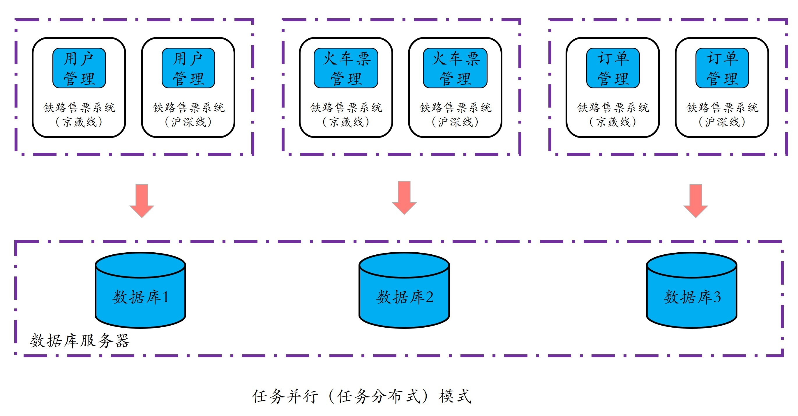

- 00 开篇词 四纵四横，带你透彻理解分布式技术.md
- 01 分布式缘何而起：从单兵，到游击队，到集团军.md
- 02 分布式系统的指标：啥是分布式的三围.md
- 03 分布式互斥：有你没我，有我没你.md
- 04 分布式选举：国不可一日无君.md
- 05 分布式共识：存异求同.md
- 06 分布式事务：All or nothing.md
- 07 分布式锁：关键重地，非请勿入.md
- 08 分布式技术是如何引爆人工智能的？.md
- 09 分布式体系结构之集中式结构：一人在上，万人在下.md
- 10 分布式体系结构之非集中式结构：众生平等.md
- 11 分布式调度架构之单体调度：物质文明、精神文明一手抓.md
- 12 分布式调度架构之两层调度：物质文明、精神文明两手抓.md
- 13 分布式调度架构之共享状态调度：物质文明、精神文明多手协商抓.md
- 14 答疑篇：分布式事务与分布式锁相关问题.md
- 15 分布式计算模式之MR：一门同流合污的艺术.md
- 16 分布式计算模式之Stream：一门背锅的艺术.md
- 17 分布式计算模式之Actor：一门甩锅的艺术.md
- 18 分布式计算模式之流水线：你方唱罢我登场.md
- 19 分布式通信之远程调用：我是你的千里眼.md
- 20 分布式通信之发布订阅：送货上门.md
- 21 分布式通信之消息队列：货物自取.md
- 22 答疑篇：分布式体系架构与分布式计算相关问题.md
- 23 CAP理论：这顶帽子我不想要.md
- 24 分布式数据存储系统之三要素：顾客、导购与货架.md
- 25 数据分布方式之哈希与一致性哈希：“掐指一算”与“掐指两算”的事.md
- 26 分布式数据复制技术：分身有术.md
- 27 分布式数据之缓存技术：“身手钥钱”随身带.md
- 28 分布式高可靠之负载均衡：不患寡，而患不均.md
- 29 分布式高可靠之流量控制：大禹治水，在疏不在堵.md
- 30 分布式高可用之故障隔离：当断不断，反受其乱.md
- 31 分布式高可用之故障恢复：知错能改，善莫大焉.md
- 32 答疑篇：如何判断并解决网络分区问题？.md
- 33 知识串联：以购买火车票的流程串联分布式核心技术.md
- 34 搭建一个分布式实验环境：纸上得来终觉浅，绝知此事要躬行.md
- 特别放送 Jackey：寄语天涯客，轻寒底用愁.md
- 特别放送 分布式下的一致性杂谈.md
- 特别放送 崔新：追根溯源，拨开云雾见青天.md
- 特别放送 徐志强：学习这件事儿，不到长城非好汉.md
- 特别放送 那些你不能错过的分布式系统论文.md
- 结束语 为什么说提升职业竞争力要从尊重、诚实开始？.md
01 分布式缘何而起：从单兵，到游击队，到集团军
你好，我是聂鹏程。这是专栏的第一篇文章，我们先来聊聊什么是分布式。
与其直接用些抽象、晦涩的技术名词去给分布式下一个定义，还不如从理解分布式的发展驱动因素开始，我们一起去探寻它的本质，自然而然地也就清楚它的定义了。
在今天这篇文章中，我将带你了解分布式的起源，是如何从单台计算机发展到分布式的，进而帮助你深入理解什么是分布式。为了方便你更好地理解这个演进过程，我将不考虑多核、多处理器的情况，假定每台计算机都是单核、单处理器的。
分布式起源
单兵模式：单机模式
1946年情人节发布的ENIAC是世界上的第一台通用计算机，它占地170平米重达30吨，每秒可进行5000次加法或者400次乘法运算，标志着单机模式的开始。
所谓单机模式是指，所有应用程序和数据均部署在一台电脑或服务器上，由一台计算机完成所有的处理。
以铁路售票系统为例，铁路售票系统包括用户管理、火车票管理和订单管理等模块，数据包括用户数据、火车票数据和订单数据等，如果使用单机模式，那么所有的模块和数据均会部署在同一台计算机上，也就是说数据存储、请求处理均由该计算机完成。这种模式的好处是功能、代码和数据集中，便于维护、管理和执行。
单机模式的示意图，如下所示：

这里需要注意的是，本文的所有示意图中，紫色虚线表示在一台计算机内。
事物均有两面性，我们再来看看单机模式的缺点。单个计算机的处理能力取决于CPU和内存等，但硬件的发展速度和性能是有限的，而且升级硬件的性价比也是我们要考虑的，由此决定了CPU和内存等硬件的性能将成为单机模式的瓶颈。
你有没有发现，单机模式和单兵作战模式非常相似，单台计算机能力再强，就好比特种兵以一敌百，但终归能力有限。此外，将所有任务都交给一台计算机，也会存在将所有鸡蛋放到一个篮子里的风险，也就是单点失效问题。
归纳一下，单机模式的主要问题是：性能受限、存在单点失效问题。
游击队模式：数据并行或数据分布式
既然单机模式存在性能和可用性的问题。那么，有没有什么更好的计算模式呢？答案是肯定的。
为解决单机模式的问题，并行计算得到了发展，进而出现了数据并行（也叫作数据分布式）模式。并行计算采用消息共享模式使用多台计算机并行运行或执行多项任务，核心原理是每台计算机上执行相同的程序，将数据进行拆分放到不同的计算机上进行计算。
请注意，并行计算强调的是对数据进行拆分，任务程序在每台机器上运行。要达到这个目的，我们必须首先把单机模式中的应用和数据分离，才可能实现对数据的拆分。这里的应用就是执行任务的程序，任务就是提交的请求。以铁路售票系统为例，运行在服务器上的用户管理、火车票管理和订单管理等程序就是应用，用户提交的查询火车票、购买火车票的请求就是任务。
在单机模式中，应用和数据均在一台计算机或服务器上，要实现数据的并行，首先必须将应用和数据分离以便将应用部署到不同的计算机或服务器上；然后，对同类型的数据进行拆分，比方说，不同计算机或服务器上的应用可以到不同的数据库上获取数据执行任务。
以铁路售票系统的数据并行为例，主要包括两个步骤，如下所示：
第一步，将应用与数据分离，分别部署到不同的服务器上：

第二步，对数据进行拆分，比如把同一类型的数据拆分到两个甚至更多的数据库中，这样应用服务器上的任务就可以针对不同数据并行执行了。
对于铁路售票系统来说，根据线路将用户、火车票和订单数据拆分到不同的数据库中，部署到不同的服务器上，比如京藏线的数据放在数据库服务器1上的数据库中，沪深线的数据放在数据库服务器2上的数据库中。

需要注意的是，为了更好地帮助你理解这个数据拆分的过程，我在这里选择拆分数据库的方式进行讲解。由于数据库服务器本身的并发特性，因此你也可以根据你的业务情况进行选择，比方说所有业务服务器共用一个数据库服务器，而不一定真的需要去进行数据库拆分。
可以看出，在数据并行或数据分布式模式中，每台计算机都是全量地从头到尾一条龙地执行一个程序，就像一个全能的铁道游击队战士。所以，你也可以将这种模式形象地理解成游击队模式，就和铁道游击队插曲的歌词有点类似：“我们扒飞车那个搞机枪，撞火车那个炸桥梁……”
这种模式的好处是，可以利用多台计算机并行处理多个请求，使得我们可以在相同的时间内完成更多的请求处理，解决了单机模式的计算效率瓶颈问题。但这种模式仍然存在如下几个问题，在实际应用中，我们需要对其进行相应的优化：
- 相同的应用部署到不同的服务器上，当大量用户请求过来时，如何能比较均衡地转发到不同的应用服务器上呢？解决这个问题的方法是设计一个负载均衡器，我会在“分布式高可靠”模块与你讲述负载均衡的相关原理。
- 当请求量较大时，对数据库的频繁读写操作，使得数据库的IO访问成为瓶颈。解决这个问题的方式是读写分离，读数据库只接收读请求，写数据库只接收写请求，当然读写数据库之间要进行数据同步，以保证数据一致性。
- 当有些数据成为热点数据时，会导致数据库访问频繁，压力增大。解决这个问题的方法是引入缓存机制，将热点数据加载到缓存中，一方面可以减轻数据库的压力，另一方面也可以提升查询效率。
从上面介绍可以看出，数据并行模式实现了多请求并行处理，但如果单个请求特别复杂，比方说需要几天甚至一周时间的时候，数据并行模式的整体计算效率还是不够高。
由此可见，数据并行模式的主要问题是：对提升单个任务的执行性能及降低时延无效。
集团军模式：任务并行或任务分布式
那么，有没有办法可以提高单个任务的执行性能，或者缩短单个任务的执行时间呢？答案是肯定的。任务并行（也叫作任务分布式）就是为解决这个问题而生的。那什么是任务并行呢？
任务并行指的是，将单个复杂的任务拆分为多个子任务，从而使得多个子任务可以在不同的计算机上并行执行。
我们仍以铁路售票系统为例，任务并行首先是对应用进行拆分，比如按照领域模型将用户管理、火车票管理、订单管理拆分成多个子系统分别运行在不同的计算机或服务器上。换句话说，原本包括用户管理、火车票管理和订单管理的一个复杂任务，被拆分成了多个子任务在不同计算机或服务器上执行，如下图所示：

可以看出，任务并行模式完成一项复杂任务主要有两个核心步骤：首先将单任务拆分成多个子任务，然后让多个子任务并行执行。这种模式和集团军模式很像，任务拆分者对应领导者，不同子系统对应不同兵种，不同子程序执行不同任务就像不同的兵种执行不同的命令一样，并且运行相同子系统或子任务的计算机又可以组成一个兵团。
在集团军模式中，由于多个子任务可以在多台计算机上运行，因此通过将同一任务待处理的数据分散到多个计算机上，在这些计算机上同时进行处理，就可以加快任务执行的速度。因为，只要一个复杂任务拆分出的任意子任务执行时间变短了，那么这个任务的整体执行时间就变短了。
当然，nothing is perfect。集团军模式在提供了更好的性能、扩展性、可维护性的同时，也带来了设计上的复杂性问题，毕竟对一个大型业务的拆分也是一个难题。不过，对于大型业务来讲，从长远收益来看，这个短期的设计阵痛是值得的。这也是许多大型互联网公司、高性能计算机构等竞相对业务进行拆分以及重构的一个重要原因。
分布式是什么？
讲了半天，那到底什么是分布式呢？
总结一下，分布式其实就是将相同或相关的程序运行在多台计算机上，从而实现特定目标的一种计算方式。
从这个定义来看，数据并行、任务并行其实都可以算作是分布式的一种形态。从这些计算方式的演变中不难看出，产生分布式的最主要驱动力量，是我们对于性能、可用性及可扩展性的不懈追求。
总结
在今天这篇文章中，我和你分享了分布式的起源，即从单机模式到数据并行（也叫作数据分布式）模式，再到任务并行（也叫作任务分布式）模式。
单机模式指的是，所有业务和数据均部署到同一台机器上。这种模式的好处是功能、代码和数据集中，便于维护、管理和执行，但计算效率是瓶颈。也就是说单机模式性能受限，也存在单点失效的问题。
数据并行（也叫作数据分布式）模式指的是，对数据进行拆分，利用多台计算机并行执行多个相同任务，通过在相同的时间内完成多个相同任务，从而缩短所有任务的总体执行时间，但对提升单个任务的执行性能及降低时延无效。
任务并行（也叫作任务分布式）模式指的是，单任务按照执行流程，拆分成多个子任务，多个子任务分别并行执行，只要一个复杂任务中的任意子任务的执行时间变短了，那么这个业务的整体执行时间也就变短了。该模式在提高性能、扩展性、可维护性等的同时，也带来了设计上的复杂性问题，比如复杂任务的拆分。
在数据并行和任务并行这两个模式的使用上，用户通常会比较疑惑，到底是采用数据并行还是任务并行呢？一个简单的原则就是：任务执行时间短，数据规模大、类型相同且无依赖，则可采用数据并行；如果任务复杂、执行时间长，且任务可拆分为多个子任务，则考虑任务并行。在实际业务中，通常是这两种模式并用。赶紧行动起来，去分析一下你的业务到底应该采用哪种分布式模式吧，加油！
课后思考
你觉得分布式与传统的并行计算的区别是什么？你可以结合多核、多处理器的情况进行思考。
我是聂鹏程，感谢你的收听，欢迎你在评论区给我留言分享你的观点，也欢迎你把这篇文章分享给更多的朋友一起阅读。我们下期再见！
© 2019 - 2023 Liangliang Lee. Powered by gin and hexo-theme-book.